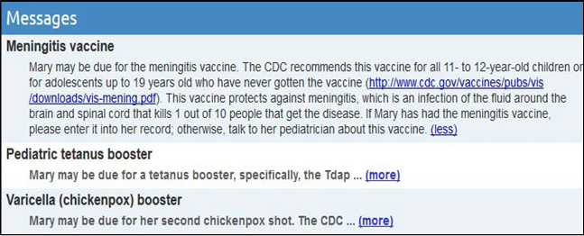

Chapter 15
15. Date Reminders
The Date Reminders list displays upcoming or past due event reminders as defined by the time period set in the PHR's Date Reminder Settings.
A date reminder is generated when you enter due dates into some sections of the PHR. Due dates that have passed will continue to show up on the Date Reminders list until the Hide checkbox for the due date is checked or until new dates are entered in the PHR.
The Date Reminders list generates the following reminder types:
|
User enters |
in PHR section |
to get date reminder type |
|
Resupply Date |
Drugs |
Active drugs resupply date |
|
Next Appt. |
Medical Contacts |
Medical appointments Next Appt. |
|
Next Due |
Test Results & Trackers |
Test Results & Trackers Next Due |
|
Next Due |
Vaccinations |
Vaccination Next Due |
Change and view date reminder settings by clicking on the Date Reminders link at the top of the Health Record Details page and then clicking on the Date Reminder Settings button at the bottom of the Date Reminders page.
Any dates that have been entered but not yet saved will not be included in the list.
Both the Date Reminders and Date Reminder Settings lists can be sorted by clicking any of the column headings in the lists.